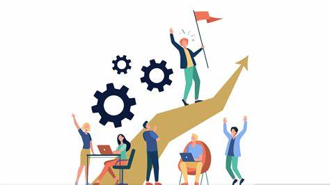

¿Qué es la Mejora Continua?
La mejora continua es un proceso sistemático de perfeccionamiento constante en todas las áreas de la vida, ya sea en el trabajo, el aprendizaje o en el crecimiento personal. Se trata de adoptar una mentalidad de progreso constante, en lugar de buscar la perfección de inmediato.
Importancia de la Mejora Continua
La mejora continua te ayuda a avanzar hacia tus metas a un ritmo sostenible, evitando el estancamiento. En el ámbito profesional, fomenta la innovación y la eficiencia. A nivel personal, contribuye a un crecimiento más pleno, impulsando el desarrollo de habilidades, actitudes y perspectivas positivas.
Adoptar una mentalidad de mejora continua permite enfrentarse mejor a los desafíos, identificar oportunidades y mantener una actitud proactiva ante los cambios.
Principios Clave de la Mejora Continua
Existen algunos principios esenciales que puedes aplicar para fomentar la mejora continua en tu vida:
- Pequeños Incrementos: Concéntrate en realizar pequeñas mejoras constantes en lugar de intentar grandes cambios de golpe. A largo plazo, los pequeños esfuerzos acumulados pueden generar un impacto significativo.
- Revisión Periódica: Evalúa tu progreso de forma regular. Analizar lo que funciona y lo que no te ayudará a ajustar tu enfoque y mejorar.
- Aprender de los Errores: No temas cometer errores. Cada error es una oportunidad para aprender y crecer.
- Buscar Retroalimentación: La retroalimentación externa te proporciona una perspectiva más objetiva sobre tu progreso y te ofrece ideas sobre cómo mejorar.
- Actitud Positiva: Mantener una actitud positiva es clave para enfrentar los desafíos y seguir adelante cuando las cosas se ponen difíciles.
Estrategias para el Crecimiento Personal
El crecimiento personal está estrechamente ligado a la mejora continua. Aquí tienes algunas estrategias que te pueden ayudar en tu camino hacia el desarrollo personal:
- Establece Metas Claras: Define metas específicas y alcanzables que te permitan medir tu progreso.
- Desarrollo de Nuevas Habilidades: El aprendizaje continuo es una de las claves para el crecimiento personal. Ya sea aprender un nuevo idioma, una habilidad técnica o una actividad artística, siempre hay algo nuevo que puedes descubrir.
- Sal de tu Zona de Confort: Para crecer es importante retarte a ti mismo y hacer cosas que te incomoden o asusten. Es en estos momentos de desafío donde más se aprende.
- Busca Mentores o Modelos a Seguir: Aprender de otras personas que han logrado lo que tú deseas te proporciona inspiración y guía.
- Cuida tu Salud Mental: El bienestar emocional es fundamental para el crecimiento personal. Practica la meditación, la atención plena o cualquier otra actividad que te ayude a mantener tu mente equilibrada.